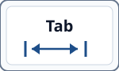

🖥️ Ordinateur partagé (salle de techno, CDI) : un autre élève qui ouvre cette page sur la même session verra tes réponses.
Quand tu as fini : imprime en PDF si tu veux garder une trace, puis clique sur « 🗑 Effacer ma sauvegarde ».
📖 Rappel : la situation et ton hypothèse
💻 Bienvenue dans la cybersécurité — Séquence 4e 🔐
🎯 Avant de commencer : trois choses à lire
- 📚 Ce que tu vas apprendre
Qui pourrait lire tes données sans en avoir le droit, et comment l'en empêcher.
Les règles d'un usage raisonné : ton identité numérique, les témoins de connexion (cookies), la géolocalisation, les droits d'auteur. - 🛠 Ce que tu dois savoir faire
Protéger un compte : un mot de passe solide, la double authentification.
Reconnaître une tentative d'hameçonnage : un faux message qui veut tes codes.
Limiter les traces que tu laisses en ligne. - ✅ Comment réussir
Avant de cliquer, vérifie qui t'envoie le message.
Partage le moins de données possible.
Après chaque exercice, compare avec la correction.
📊 Compétences & connaissances (Socle / Techno / CRCN)
| Domaine | Formulation | Traces (exemples) |
|---|---|---|
| Socle — Domaine 2 | Adopter des comportements responsables; Comprendre les risques numériques; Respecter les règles d'usage | Réponses aux quizzes sur les risques, adoption de bonnes pratiques dans les exercices DnD, respect des règles dans les quizzes sur les licences |
| CRCN — 4.1 / 4.2 | Protéger ses données; Sécuriser ses comptes (mots de passe, 2FA); Gérer ses traces | Activation 2FA dans quizzes, mots de passe forts dans exercices, gestion traces dans quizzes et DnD |
| Technologie — 4e_C1.4 | Identifier et appliquer les règles pour un usage raisonné des objets communicants et des environnements numériques (propriété intellectuelle, identité numérique, témoins de connexion, géolocalisation). | Identification des risques dans les quiz, classement des données dans les glisser-déposer, réglages et autorisations dans les cas simulés. Le bloc Python est un complément hors parcours : il n'atteste pas cette compétence. |
Référence normative : programme de technologie du cycle 4, BO n°9 du 29 février 2024.
Codification opérationnelle : les codes 4e_C1.4 servent à ranger les séquences ; ils ne viennent pas du programme officiel.
🔄 Avant de commencer : ce que je vérifie
Pour toi, sans note : coche ce qui est déjà en place. Sous chaque ligne, un lien pour le reprendre si tu n'en es pas sûr·e.
-
→ pas encore sûr·e ? la synthèse 5e_C1.5 et C1.6, « Un mot de passe qui a été dit n'est plus un mot de passe »
-
→ pas encore sûr·e ? la synthèse 5e_C1.5 et C1.6, « Ce n'est pas un élément qui identifie, c'est leur combinaison »
-
→ pas encore sûr·e ? relis la partie 5 de la synthèse 5e_C1.1 à C1.6, « Comment une donnée voyage-t-elle, et qui a le droit d'y toucher ? »
Dans cette séquence : on se demande qui pourrait lire tes données sans en avoir le droit, et comment on l'en empêche.
Il ne s'agit pas seulement de ranger l'information : il faut la protéger.
Ce qu'il faut garder en tête tient en une phrase : tes données passent par des machines qui ne t'appartiennent pas.
Le mode essentiel masque le tableau des compétences et les boutons d'aide et de correction : il ne reste que les consignes et les exercices.
🎫 Billet d'entrée — trois questions, sans note
Cette séquence s'appuie sur ce que tu as fait en 5e.
Trois questions pour savoir, toi comme le
professeur, sur quoi on peut s'appuyer.
Elles ne comptent pas dans ta progression et ne sont pas
notées — « je ne sais pas encore » est une réponse utile.
✅ Correction complète du billet — ouvre-la après avoir vérifié
- 1. En 5e, tu as suivi le chemin d'une donnée. Par où passe-t-elle ?
✅ des machines qui ne t'appartiennent pas
✘ « uniquement ton téléphone » : Ton téléphone n'est que le point de départ. Pour envoyer une photo, la donnée voyage par des antennes, des câbles et des serveurs.
✘ « le nuage, qui est un endroit sans machines » : Le « nuage » est un nom imagé : derrière, il y a des centres de données remplis de serveurs bien réels. - 2. Qu'est-ce qu'une donnée personnelle ?
✅ toute information qui permet de reconnaître quelqu'un
✘ « seulement le nom et le prénom » : Le nom en fait partie, mais pas seulement. Une photo, une adresse ou un numéro de téléphone permettent aussi de reconnaître quelqu'un.
✘ « seulement ce qu'on publie soi-même » : Ce que d'autres publient sur toi, ou ce qu'une application enregistre sans que tu le voies, compte aussi. - 3. Qu'est-ce d'abord qu'un mot de passe solide ?
✅ long, et différent d'un service à l'autre
✘ « compliqué mais réutilisé partout » : Réutilisé partout, il suffit qu'un seul service soit piraté pour que tous tes comptes tombent. Pense à ce qui se passe si l'un d'eux fuit.
✘ « court, pour ne pas l'oublier » : Un mot de passe court se devine vite, un ordinateur essaie des milliers de combinaisons par seconde. C'est la longueur qui le rend solide.
📰 Mise en situation générale
Imagine que tu utilises ton smartphone pour envoyer un e-mail avec une photo de classe.
Soudain, ton compte est hacké (piraté : quelqu'un y entre à ta place) car ton mot de passe était trop simple.
Tes messages privés sont exposés sur les réseaux sociaux, et tu reçois des commentaires malveillants.
Image générée par IA (Canva).
La leçon à en tirer.
Dans le monde d'aujourd'hui, où les e-mails, réseaux sociaux et services en ligne font partie de ton quotidien, les risques sont partout : vol de données, usurpation d'identité (quelqu'un se fait passer pour toi), ou propagation de malware (un logiciel malveillant, qui abîme ou espionne).
Mais avec les bonnes pratiques, tu peux te protéger – active 2FA (la double authentification : un code reçu sur ton téléphone, en plus du mot de passe), utilise des mots de passe forts, et sois vigilant avec les liens.
Cela te prépare à un avenir où la cybersécurité est essentielle pour tous.
❓ Problématique
Comment protéger mes données, mes comptes et ma e‑réputation tout en utilisant des services numériques (e-mails, réseaux sociaux, etc.) ?
🪜 Version étayée — des phrases à compléter
Le niveau attendu est exactement le même qu'avec la consigne libre : ces débuts de phrases retirent l'obstacle de la rédaction, pas l'exigence.
- Pour protéger mes comptes, je dois d'abord ____ .
- Pour protéger mes données, je dois ____ .
- Ce qui est le plus difficile à tenir au quotidien, c'est ____ .
⚠️ Ce bloc ne fait pas partie des quatre séances de
cette séquence : la programmation relève de la compétence C9, pas de C1.
Il est conservé ici
parce que des classes l'utilisent déjà. Ses points ne comptent pas dans le score de la séquence — c'est un bonus, pas une séance.
🛡️ 1. Risques et bonnes pratiques Score : 0/…
Cybermalveillance.gouv.fr — Comment reconnaître un message de phishing ?
Cybermalveillance.gouv.fr — dispositif national d'assistance aux victimes
Ce qu'il faut regarder
Pour chaque message montré, cherche trois choses, dans cet ordre :
- l'adresse réelle de l'expéditeur — pas le nom affiché ;
- le nom de domaine du lien : c'est la seule partie qui dit à qui tu parles ;
- ce qui presse : un délai, une menace, une récompense.
Si l'une des trois n'apparaît pas à l'écran, note-le. Un message qu'on ne peut pas vérifier n'est pas pour autant un message sûr — c'est un message qu'on ne peut pas vérifier.
▶ Ouvrir la vidéoSi la vidéo ne s'ouvre pas
Le professeur projette ou distribue trois messages imprimés. Sur chacun, entoure au crayon :
- l'adresse réelle de l'expéditeur (pas le nom affiché) ;
- le nom de domaine du lien — la seule partie qui dit à qui tu parles ;
- ce qui presse : un délai, une menace, une récompense.
Puis écris à qui tu signales, et en combien de temps. Signaler vite n'est jamais une faute.
📰 Mise en situation : Un incident au collège
Imagine que tu es un élève de 4e au collège.
Un matin, tu reçois un e-mail qui semble provenir de la direction de ton établissement.
Il te demande de cliquer sur un lien pour "mettre à jour tes informations personnelles" afin d'accéder à une nouvelle plateforme éducative.
Le message est urgent et menace de bloquer ton compte Pronote si tu ne le fais pas immédiatement.
Intrigué, tu cliques... et sans le savoir, tu viens d'installer un malware sur ton ordinateur familial.
💡 Ce que cette situation apprend — à ouvrir après avoir répondu
Risques impliqués : Le phishing peut mener à l'installation d'un keylogger (enregistreur de frappes) ou d'un trojan, exposant tes mots de passe et données personnelles.
Un ransomware pourrait chiffrer tes fichiers scolaires, exigeant une rançon. Une attaque DDoS pourrait bloquer l'accès au site du collège, perturbant les cours en ligne.
Bonne attitude à avoir : Vérifie toujours l'expéditeur (passe la souris sur son nom, sans cliquer, pour voir sa vraie adresse).
Ne clique pas sur des liens suspects ; contacte directement la direction par un canal officiel (comme l'ENT du collège).
Active la 2FA sur tous tes comptes, utilise un antivirus à jour, et fais des sauvegardes régulières de tes devoirs sur un cloud sécurisé comme OneDrive scolaire.
Si tu suspects quelque chose, alerte un adulte ou le professeur de technologie immédiatement.
En adoptant ces habitudes, tu te donnes les moyens de repérer une attaque, et tu protèges non seulement tes données mais aussi celles de ton entourage.
Souviens-toi : la vigilance est la première ligne de défense !
Les assistants conversationnels (ChatGPT et les autres) savent expliquer une notion comme
« rançongiciel » ou « hameçonnage ».
Trois conditions avant d'en ouvrir un :
il faut un compte, un âge minimum (13 ans, et l'accord d'un adulte avant 18 ans),
et l'accord de ton établissement — tout ce que tu écris à un assistant part sur les
serveurs de l'entreprise qui le fait tourner.
C'est exactement le sujet de cette séquence.
Alors avant de demander à une machine : la synthèse de la séquence répond déjà à la
plupart des questions, et ton professeur répond aux autres.
Et si tu utilises un assistant,
garde le réflexe qu'on travaille ici : vérifie ce qu'il te dit ailleurs qu'auprès de
lui-même.
📖 Glossaire des sigles (FR / EN)
- URL — Uniform Resource Locator (FR : localisateur uniforme de ressource)
- HTTP — HyperText Transfer Protocol (FR : protocole de transfert hypertexte)
- HTTPS — HTTP Secure (HTTP chiffré via TLS/SSL)
- TLS — Transport Layer Security (FR : sécurité de la couche de transport)
- SSL — Secure Sockets Layer (ancienne version de TLS)
- DNS — Domain Name System (FR : système de noms de domaine)
- MITM — Man‑In‑The‑Middle (FR : homme‑du‑milieu)
- DDoS — Distributed Denial of Service (FR : déni de service distribué)
- VPN — Virtual Private Network (FR : réseau privé virtuel)
- 2FA — Two‑Factor Authentication (FR : authentification à deux facteurs)
- Phishing — FR : hameçonnage
- Ransomware — FR : rançongiciel
- Trojan — FR : cheval de Troie
📌 Notions clés
Phishing 2FA Mot de passe Sauvegarde MAJ & Antivirus Malware DDoS VPN HTTPS Cookie
✋ 1.a — Associer « menace → définition » (6 paires) (4 points)
📦 1.c — Glisse chaque étiquette dans la bonne colonne (8 étiquettes) (3 points)
⚠️ Risques / attaques
✅ Bonnes pratiques
💬 1.d — Pourquoi les attaques visent-elles d'abord les personnes, plutôt que les machines ? (non noté)
🪜 Version étayée — des phrases à compléter
Le niveau attendu est exactement le même qu'avec la consigne libre : ces débuts de phrases retirent l'obstacle de la rédaction, pas l'exigence.
- On dit que l'humain est le maillon faible parce que ____ .
- Un exemple concret : ____ .
- Pourtant, l'humain est aussi le maillon FORT quand ____ .
✏️ 1.e — Micro‑questions — Mots de passe (1 point)
🔒 1.f — Quiz Menaces & Solutions (7 questions)
🔎 Je vérifie — 7 questions
💡 Aide de niveau 1
Repère d'abord ce que vise chaque attaque : un compte, des fichiers, un serveur, un clavier.
💡💡 Aide de niveau 2
Phishing : un faux message. Rançongiciel : tes fichiers chiffrés. DDoS : un serveur saturé. Keylogger : tes touches enregistrées.
La 2FA protège un compte ; l'antivirus cherche des programmes cachés.
📖 Correction complète du quiz (à ouvrir APRÈS avoir vérifié)
Le phishing (hameçonnage), c'est : se faire passer pour un service connu, pour voler tes informations.
Pas « enregistrer en secret ce que tu tapes au clavier » : ça, c'est l'enregistreur de frappe (keylogger) : un logiciel caché, pas un faux message.
Pas « saturer un serveur de requêtes pour le bloquer » : ça, c'est une attaque DDoS : elle bloque un service, elle ne vole rien.
Pas « chiffrer tes fichiers, puis demander une rançon » : ça, c'est le rançongiciel. Le phishing passe par un faux message qui imite quelqu'un.
Tu as tapé ton mot de passe sur un faux site. Ce qui protège encore ton compte : l'authentification à deux facteurs (2FA).
Pas « un mot de passe plus long » : l'attaquant a déjà ton mot de passe : sa longueur ne le gêne plus.
Pas « une sauvegarde de tes fichiers » : une sauvegarde rend tes fichiers ; elle n'empêche personne d'entrer dans ton compte.
Pas « la navigation privée » : elle n'efface que ton historique, sur ton appareil : ton mot de passe est déjà parti.
Un rançongiciel (ransomware) chiffre : tes fichiers, pour te demander une rançon.
Pas « ton mot de passe » : il ne vise pas ton mot de passe : il rend illisible ce que tu as enregistré.
Pas « ta connexion Internet » : ta connexion marche encore : c'est ce que tu as enregistré qui devient illisible.
Pas « l'écran seulement, sans toucher aux fichiers » : les fichiers eux-mêmes sont chiffrés : c'est pour ça qu'une sauvegarde à part te sauve.
Un enregistreur de frappe (keylogger) s'est installé sur ton ordinateur. Ce qui peut le détecter : un antivirus à jour.
Pas « une sauvegarde » : une sauvegarde copie tes fichiers ; elle ne cherche aucun programme caché.
Pas « la connexion HTTPS » : hTTPS protège le trajet ; le keylogger lit tes touches avant, sur ton clavier.
Pas « un mot de passe plus long » : il enregistre chaque touche : un mot de passe long est enregistré aussi.
Une attaque DDoS vise : le serveur d'un service, pour le saturer.
Pas « ton mot de passe » : un DDoS ne vole rien : il bloque un service en l'inondant de demandes.
Pas « tes fichiers » : chiffrer tes fichiers, c'est le rançongiciel. Le DDoS vise un service en ligne.
Pas « ton clavier » : lire ton clavier, c'est le keylogger. Le DDoS vise un service en ligne.
Un malware, c'est : un logiciel malveillant, quel qu'il soit.
Pas « un antivirus » : l'antivirus, c'est ce qui détecte les malwares : l'inverse.
Pas « un faux message qui imite un service » : un faux message, c'est le phishing : un message, pas un logiciel.
Pas « une panne de matériel » : une panne n'est pas un programme. Un malware est un programme écrit pour nuire.
Qui peut contrer une attaque DDoS ? le service attaqué, avec son hébergeur.
Pas « toi, en activant la 2FA » : la 2FA protège ton compte. Le DDoS vise le serveur du service, pas toi.
Pas « toi, en changeant ton mot de passe » : le DDoS ne passe pas par ton compte : ton mot de passe n'y change rien.
Pas « personne : il faut attendre » : les hébergeurs ont des protections anti-DDoS : le service attaqué peut agir.
La protection se choisit selon la cible.
🎯 Critère de réussite : je relie chaque attaque à sa cible, et je choisis la protection qui va avec.
Aide pour la section 1
Phishing : faux message qui imite un service pour voler des infos
2FA : 2 preuves d'identité (mot de passe + code/app/clé)
Mot de passe fort : long (phrase), unique, complexe
Sauvegarde : copie de secours pour récupérer ses données
Antivirus/MAJ : réduit le risque de compromission
Malware : logiciel malveillant qui infecte l'ordinateur
DDoS : rend un service inaccessible, en saturant son serveur de requêtes
VPN : masque ton adresse IP aux sites et chiffre ta connexion — mais son fournisseur, lui, voit ton adresse et les sites visités
HTTPS : chiffre les échanges entre toi et le site — il ne dit pas si le site est honnête
Cookie : petit fichier qu'un site dépose sur ton appareil ; certains servent à suivre ta navigation
Correction pour la section 1
Phishing : faux message pour voler des infos
Ransomware : chiffre et demande rançon
Trojan : logiciel d'apparence inoffensive qui cache un programme malveillant
Malware : logiciel malveillant général
DDoS : surcharge le serveur
Keylogger : enregistre les frappes clavier
Micro-question Phishing : Se faire passer pour un service afin de voler des infos
Faites glisser chaque étiquette : Risques / attaques : Lien inconnu, Fichier .exe suspect, Email d'une banque inconnue, Pièce jointe non demandée
Bonnes pratiques : 2FA activée, Sauvegarde régulière, Antivirus à jour, 4G plutôt que Wi-Fi public — et, si l'on n'a pas le choix, aucune opération sensible et si possible un VPN
Micro-questions — Mots de passe : sûrs : etoile-ficelle-brioche-carotte-tambour-jardin-ouragan, bougie-sabot-jongleur-chaton-melon-marmite-mouton
Les critères sont ceux du corrigé du Bonus, mot pour mot. Une bonne phrase de passe se reconnaît à quatre critères :
- la phrase est longue — au moins sept mots, pas un mot déguisé.
C'est le chiffre de la CNIL : une phrase de passe « doit être composée d’au minimum 7 mots » (recommandation de 2022) ; - les mots ne se déduisent ni les uns des autres, ni de toi (ni ton prénom, ni ton club, ni ta date de naissance) ;
- tu la retiens sans la noter — c'est ce qui la rend utilisable tous les jours ;
- elle ne sert qu'à un compte : une phrase réutilisée tombe partout à la fois.
Comment vérifier tes deux phrases. Les deux premiers se lisent dans la liste ; les deux derniers dépendent de toi.
Pourquoi le hasard compte.
Les deux phrases sûres ont été tirées au hasard, mot par mot, dans une liste de noms communs : c'est la méthode que décrit l'ANSSI, « choisir aléatoirement un certain nombre de mots parmi un corpus déterminé ».
Le hasard compte : la force d'une phrase de passe ne vaut « que si chaque […] mot […] est choisi de manière uniformément aléatoire ».
Des mots qui s'appellent l'un l'autre, comme une ville et son pays, se devinent : les dictionnaires des attaquants contiennent déjà des « combinaison[s] (concaténation, etc.) de mots connus ».
Une année aussi : l'ANSSI range « une date » parmi les choix faciles à retenir dont l'entropie « se retrouve fortement réduite ».
Ni majuscule, ni chiffre ? Pour « une phrase de passe de 20 caractères et plus », l'ANSSI envisage de ne pas « imposer de contraintes sur les caractères à utiliser » : c'est la longueur qui travaille.
MonChien!@dore*LesCroquettes#2025! n'est pas sûr, malgré sa longueur et ses symboles : il parle de toi.
La CNIL l'écrit en toutes lettres : « Personne ne doit deviner votre mot de passe à partir du nom de votre chien ou de votre film préféré. »
Le quiz 1.f : sa correction complète est sous le quiz (« 📖 Correction complète du quiz »).
Pourquoi pas « toi », à la question « Qui peut contrer une attaque DDoS ? » ? Un DDoS vise le serveur d'un service, pas ton compte : ta 2FA n'y change rien.
Ce qui protège, c'est un service anti-DDoS pris « auprès de votre prestataire en cas d'hébergement externe » ou auprès des fournisseurs d'accès (ANSSI) ; pendant l'attaque, on filtre les requêtes « au niveau de votre pare-feu ou de votre hébergeur » (Cybermalveillance.gouv.fr).
Sources : CNIL, « Mots de passe : recommandations pour maîtriser sa sécurité » (délibération n° 2022-100 du 21/07/2022, exemple 3) ;
CNIL, « Les conseils de la CNIL pour un bon mot de passe » ;
Cybermalveillance.gouv.fr, « Pourquoi et comment bien gérer ses mots de passe ? », « Attaque DDoS, que faire ? » et « Les 10 mesures essentielles pour assurer votre sécurité numérique » (Wi-Fi public : mesure 10).
ANSSI, « Les Essentiels — Dénis de service distribués (DDoS) » et « Recommandations relatives à l'authentification multifacteur et aux mots de passe » (2021 : p. 10 attaque par dictionnaire, p. 27 choix aléatoire, p. 28-29 phrases de passe) ; FranceTerme, « cheval de Troie » (Journal officiel du 20/05/2005).
Consultés le 23/09/2026.
🧠 2. Programme Python — Touche Tab & Indentation Score : 0/…
📰 Mise en situation : L'importance de Python dans un monde connecté
Imagine-toi en 4e ou 3e au collège, en train de scroller sur ton smartphone pendant la récré.
Soudain, une alerte push de ton app favorite, comme TikTok ou Snapchat, te prévient d'une nouvelle mise à jour pour "améliorer la sécurité". Ce que tu ne sais pas, c'est que derrière cette app, des milliers de lignes de code Python veillent à protéger tes données contre les hackers.
Pourquoi apprendre Python.
Dans l'écosystème numérique d'aujourd'hui, Python est partout : il pilote les robots d'Amazon pour livrer tes colis, optimise les algorithmes de Google pour tes recherches scolaires, et même aide les médecins à analyser des images médicales avec des outils comme TensorFlow.
En apprenant Python, tu deviens un acteur clé de cet univers – imagine coder un bot pour vérifier si un site est sécurisé avant de cliquer, ou créer une app simple pour alerter tes amis sur les risques en ligne.
C'est concret et puissant !
Rappel : En Python, l'indentation (décalage vers la droite) n'est pas décorative : c'est une règle obligatoire qui définit les blocs (if, for, while, def…).
La touche Tab insère souvent 4 espaces. Ne mélange pas Tab et espaces dans un même fichier.

💥 Erreur fréquente
age = 20
if age >= 18:
print("Tu es majeur.") # <-- Indentation manquante (provoque une erreur)
print("Fin du programme.")
Sortie possible : IndentationError: expected an indented block
✅ Exécution OK
age = 20
if age >= 18:
print("Tu es majeur.")
print("Fin du programme.")
🔧✋ 2.a - Exemple complet : La liaison est-elle chiffrée (HTTPS) ?
# Programme complet : dire si la LIAISON est chiffrée — pas si le SITE est honnête
url = input("Entre une URL : ") # Demande à l'utilisateur
if url.startswith("https://"):
print("🔒 Liaison chiffrée (HTTPS)")
print(" Personne ne peut lire les données en chemin — mais le site, lui, peut être un piège")
else:
print("⚠️ Liaison NON chiffrée (HTTP)")
print(" Les données peuvent être interceptées")
print("Fin du programme.")
🔄 2.b — Exemple boucle FOR : plusieurs URLs — et un piège en HTTPS
# Vérifier une liste d'URLs avec une boucle FOR
urls = ["http://site1.com", "https://site2.fr", "https://phishing-exemple.com"]
for url in urls: # Parcourir chaque URL
if url.startswith("https://"):
print(f"🔒 {url} = liaison chiffrée")
else:
print(f"⚠️ {url} = liaison non chiffrée")
print("Vérification terminée.")
Sortie attendue :
⚠️ http://site1.com = liaison non chiffrée
🔒 https://site2.fr = liaison chiffrée
🔒 https://phishing-exemple.com = liaison chiffrée ← piège malgré le cadenas !
Vérification terminée.🔒 n'est pas ✅. Le programme ne lit que les huit premiers caractères de l'adresse.
HTTPS veut dire que la liaison est chiffrée : personne ne peut lire en chemin ce que tu envoies.
Il ne dit rien de qui est au bout : un site d'hameçonnage obtient son cadenas en quelques minutes.
Pour juger un site, il faut d'autres indices — l'adresse exacte, qui l'a envoyée, ce qu'il demande.
🔁 2.c — Exemple boucle WHILE : tester des URLs jusqu'à « quit »
# Tester des URLs jusqu'à « quit »
print("🔍 HTTPS ou HTTP ? - Tape 'quit' pour arrêter")
while True: # Boucle infinie
url = input("Entre une URL : ").strip()
if url.lower() == "quit":
print("⏹️ Arrêt du testeur.")
break # Sortir de la boucle
if url.startswith("https://"):
print(f"🔒 {url} = liaison chiffrée")
else:
print(f"⚠️ {url} = liaison non chiffrée")
print("Fin du programme.")
Exemple d'exécution :
🔍 HTTPS ou HTTP ? - Tape 'quit' pour arrêter
Entre une URL : http://test.com
⚠️ http://test.com = liaison non chiffrée
Entre une URL : https://banque.fr
🔒 https://banque.fr = liaison chiffrée
Entre une URL : quit
⏹️ Arrêt du testeur.
Fin du programme.🔒 2.d — Quiz Python & Cybersécurité (6 questions)
break dans une boucle ?Aide pour la section 2
Q1: Oui, Q2: for, Q3: 4, Q4: Sort de la boucle, Q5: http://phishing.com, Q6: Chaque élément de la liste
Correction pour la section 2
Q1: Oui, HTTPS chiffre les données en transit
Q2: for parcourt une liste prédéfinie
Q3: 4 espaces pour l'indentation Python
Q4: break sort de la boucle
Q5: http://phishing.com est dangereuse
Q6: url contient chaque élément de la liste
🗂️ 3. Qu'est‑ce qu'une donnée personnelle ? Score : 0/…
📰 Mise en situation : Le vol de données au collège
Imagine que tu es en 4e, et que tu reçois un message sur ton téléphone d'un "ami" te demandant ta date de naissance et ton adresse e-mail pour "un projet de classe". Sans réfléchir, tu partages ces infos.
Le lendemain, tu découvres que ton compte scolaire a été hacké, et des notes falsifiées apparaissent sur Pronote.
Pire, tes photos personnelles circulent sur un groupe WhatsApp sans ton accord.
💡 Ce que cette situation apprend — à ouvrir après avoir répondu
Risques impliqués : Les données personnelles peuvent être utilisées pour l'usurpation d'identité ou le doxxing, exposant à des dangers comme le harcèlement ou le vol financier.
Les données sensibles (santé, opinions) sont encore plus vulnérables et protégées par la loi RGPD.
Bonne attitude à avoir : Identifie toujours ce qui est personnel : ne partage pas ton nom, photo ou localisation sans raison.
Utilise des pseudonymes en ligne, vérifie les demandes d'infos, et signale tout partage suspect à un adulte.
Au collège, cela t'aide à protéger ta vie privée dès maintenant.
En comprenant cela, tu construis une e-réputation solide et évites des problèmes futurs. La cybersécurité commence par savoir ce que tu partages !
✋ 3.a — Classer les données (9 étiquettes) (4 points)
👤 Identité
📬 Contact
🔒 Sensibles
❓ 3.b — Pourquoi sont‑elles sensibles ? (non noté)
Explique pourquoi il faut protéger ces données.
Dis ce qui pourrait arriver si elles étaient dévoilées.
🪜 Version étayée — des phrases à compléter
Le niveau attendu est exactement le même qu'avec la consigne libre : ces débuts de phrases retirent l'obstacle de la rédaction, pas l'exigence.
- Ces données sont sensibles parce qu'elles permettent de ____ .
- Si elles étaient dévoilées, il pourrait arriver ____ .
- La personne qui en subirait les conséquences serait ____ .
La divulgation de ces informations peut permettre l’usurpation d’identité, le vol ou la fraude (paiements frauduleux), la discrimination (données de santé), le harcèlement ou l’atteinte à la vie privée.
Il est essentiel de limiter leur diffusion et de paramétrer la confidentialité de ses comptes.
❓3.c — Qu’est‑ce qu’un identifiant de connexion et pourquoi faut‑il le protéger ?
✅ Un identifiant (login) permet d’accéder à vos services en ligne (ENT, réseau social, messagerie).
S’il est divulgué avec votre mot de passe, un attaquant peut accéder à vos comptes et usurper votre identité.
🔒 3.d — Quiz Données personnelles (7 questions)
🔎 Je vérifie — 7 questions
Range chaque donnée dans sa famille :
Les réponses possibles — choisis une lettre pour chaque ligne :
- AIdentité
- BContact
- CSensible
- DPas une donnée personnelle
💡 Aide de niveau 1
Une donnée personnelle dit quelque chose d'une personne : demande-toi « de qui parle-t-elle ? ».
💡💡 Aide de niveau 2
Identité : ce qui te reconnaît (nom, date de naissance, photo). Contact : ce qui te joint (e-mail, téléphone).
Sensible : santé, opinions, religion — la loi les protège plus.
📖 Correction complète du quiz (à ouvrir APRÈS avoir vérifié)
Une donnée personnelle, c'est une information qui : permet d'identifier une personne, directement ou non.
Pas « est secrète » : ton prénom n'est pas secret, et c'est pourtant une donnée personnelle.
Pas « est publiée sur Internet » : une fiche papier au secrétariat en contient aussi : Internet ne compte pas ici.
Pas « décrit un objet, sans lien avec une personne » : sans lien avec une personne, l'information ne dit rien de quelqu'un.
Range chaque donnée dans sa famille :
Identité : ta date de naissance, ta photo d'identité ;
Sensible : ton état de santé, ton opinion politique.
Ta position GPS, partagée par une application, est : une donnée personnelle : elle dit où tu es.
Pas « une donnée anonyme » : elle vient de TON téléphone : elle est liée à toi.
Pas « une donnée publique » : personne ne la voit sans l'application : elle n'est pas publique.
Pas « une information, pas une donnée » : elle est enregistrée par l'application : c'est une donnée.
Le RGPD est une loi européenne qui protège : tes données personnelles.
Pas « les logiciels contre la copie » : protéger une œuvre contre la copie, c'est le droit d'auteur.
Pas « les ordinateurs contre les virus » : contre les virus, c'est l'antivirus : un logiciel, pas une loi.
Pas « les sites contre les attaques » : une loi ne bloque pas une attaque. Le RGPD dit ce qu'on a le droit de faire de tes données.
Les données sensibles (santé, opinions, religion) sont les plus protégées.
🎯 Critère de réussite : je reconnais une donnée personnelle, et je la range dans sa famille.
Aide pour la section 3
Identité : Infos qui te nomment directement (nom, date naissance).
Contact : Moyens de te joindre (e-mail, téléphone).
Sensibles : Infos privées comme santé ou opinions.
Correction pour la section 3
Identité : Nom/prénom, Date naissance, Photo d'identité
Contact : Adresse e‑mail, N° de téléphone, Adresse postale
Sensibles : Données de santé, Opinion politique, Religion
Le quiz : sa correction complète est sous le quiz (« 📖 Correction complète du quiz »).
🔒 4. Protéger ses données personnelles Score : 0/…
📰 Mise en situation : L'attaque sur ton compte scolaire
Imagine que pendant un cours en ligne, tu ouvres un fichier partagé par un "camarade" sur l'ENT. Soudain, ton ordinateur ralentit, et un message demande une rançon pour débloquer tes fichiers de devoirs.
Tes notes et infos personnelles sont encryptées !
💡 Ce que cette situation apprend — à ouvrir après avoir répondu
Risques impliqués : tu peux perdre l'accès à tes données ou te faire voler ton identité ; le virus peut aussi gagner tout le collège par le réseau partagé.
Bonne attitude à avoir : utilise des mots de passe forts, active la double authentification (2FA) sur Pronote, mets ton antivirus à jour et sauvegarde ton travail sur l'espace en ligne du collège.
N'ouvre pas un fichier suspect : vérifie toujours d'où il vient.
Protéger tes données aujourd'hui te prépare à un monde où la cybersécurité est essentielle pour tous les métiers numériques.
✋ 4.a — Associer « attaque → solution » (6 paires) (4 points)
🎮 Associer attaques & solutions !
Glisse les solutions aux bonnes attaques. Survole pour infos !
Phishing
Rançongiciel
Faille
Malware
Suivi IP
Brute force
❓4.b — Quelle est la différence entre un ransomware et un phishing ? (non noté)
🪜 Version étayée — des phrases à compléter
Le niveau attendu est exactement le même qu'avec la consigne libre : ces débuts de phrases retirent l'obstacle de la rédaction, pas l'exigence.
- Un rançongiciel ____ , tandis qu'un hameçonnage ____ .
- Le premier s'attaque à ____ , le second à ____ .
- Ce qu'ils ont en commun : ____ .
🔒 4.c — Quiz Protection des données (7 questions)
🔎 Je vérifie — 7 questions
💡 Aide de niveau 1
Pour chaque protection, demande-toi : elle agit avant l'attaque, pendant, ou après ?
💡💡 Aide de niveau 2
Avant : mot de passe long, 2FA, mises à jour, ne pas cliquer. Pendant : l'antivirus. Après : la sauvegarde.
Le VPN cache ton adresse aux sites, pas à son fournisseur.
📖 Correction complète du quiz (à ouvrir APRÈS avoir vérifié)
La double authentification (2FA) ajoute : une seconde preuve que c'est bien toi : un code, une appli, une clé.
Pas « un second mot de passe à retenir » : la seconde preuve est d'un autre type : ce que tu possèdes (ton téléphone, une clé).
Pas « un antivirus » : la 2FA vérifie qui se connecte ; elle ne cherche pas de virus.
Pas « le chiffrement de tes fichiers » : elle protège l'entrée du compte, pas les fichiers enregistrés.
Une mise à jour de sécurité : corrige une faille que des attaquants pourraient utiliser.
Pas « change seulement l'apparence du logiciel » : certaines changent l'apparence ; celles de sécurité bouchent des failles.
Pas « ralentit l'appareil, sans rien protéger » : elle peut prendre du temps à s'installer, mais elle ferme une porte d'entrée.
Pas « remplace la sauvegarde » : une mise à jour ne copie pas tes fichiers : la sauvegarde reste utile.
Pourquoi une sauvegarde protège-t-elle d'un rançongiciel ? tu récupères tes fichiers sans payer.
Pas « elle l'empêche d'entrer dans l'ordinateur » : il peut entrer quand même : la sauvegarde agit après.
Pas « elle supprime le rançongiciel » : supprimer un logiciel malveillant, c'est le rôle de l'antivirus.
Pas « elle chiffre tes fichiers avant lui » : chiffrer avant lui ne servirait à rien : il chiffrerait encore.
Le VPN masque ton adresse IP : aux sites que tu visites, mais pas à son fournisseur.
Pas « à tout le monde, même à son fournisseur » : son fournisseur voit ton adresse et les sites visités : la CNIL le rappelle.
Pas « à personne : il accélère seulement la connexion » : il ne sert pas à aller plus vite : il fait passer ta connexion par un intermédiaire.
Pas « seulement à tes amis » : tes amis ne voient pas ton adresse IP : ce sont les sites qui la voient.
Contre une attaque par force brute (essayer des millions de mots de passe) : un mot de passe long et unique.
Pas « une sauvegarde » : la sauvegarde rend tes fichiers ; elle n'empêche pas de deviner ton mot de passe.
Pas « un VPN » : l'attaque vise ton compte, pas ton adresse : le VPN n'y change rien.
Pas « la navigation privée » : elle n'efface que l'historique sur ton appareil : ton compte reste attaquable.
Un antivirus détecte : les logiciels malveillants qu'il connaît.
Pas « les failles des logiciels » : les failles, ce sont les mises à jour qui les corrigent.
Pas « les mots de passe faibles » : il ne lit pas tes mots de passe : il cherche des programmes nuisibles.
Pas « les mises à jour manquantes » : les mises à jour, c'est le système qui les propose ; l'antivirus cherche des programmes.
Un message te demande de cliquer pour « débloquer ton compte ». Le bon réflexe : ne pas cliquer : ouvrir le site toi-même, par son adresse habituelle.
Pas « cliquer, puis vérifier l'adresse du site » : une fois cliqué, il est trop tard : la page piégée est déjà ouverte.
Pas « répondre pour demander si c'est vrai » : l'attaquant répondra que c'est vrai : le message vient de lui.
Pas « transférer le message à tes amis » : tu propagerais le piège à d'autres.
🎯 Critère de réussite : je dis ce que fait chaque protection, et ce qu'elle ne fait pas.
Aide pour la section 4
Phishing : 2FA
Rançongiciel : Sauvegarde
Faille : Mises à jour
Malware : Antivirus
Suivi IP : VPN
Brute force : Mot de passe fort
Correction pour la section 4
Phishing : Activer 2FA
Rançongiciel : Sauvegarder
Faille corrigée : Mettre à jour
Malware : Installer antivirus
Suivi IP : Utiliser VPN
Brute force : Mot de passe fort
Le quiz : sa correction complète est sous le quiz (« 📖 Correction complète du quiz »).
Le VPN masque ton adresse IP aux sites, pas à tout le monde : selon la CNIL, « l'entreprise qui fournit le service conserve la connaissance de votre adresse IP et des sites visités ».
Sources : Cybermalveillance.gouv.fr, « Les 10 mesures essentielles pour assurer votre sécurité numérique » et « Pourquoi et comment bien gérer ses mots de passe ? » ; CNIL, « Nouvelles méthodes de traçage en ligne : quelles solutions pour se protéger ? ».
Consultés le 23/09/2026.
🌐 5. Limiter ses traces en ligne Score : 0/…
📰 Mise en situation : Le suivi invisible sur les réseaux
Imagine que tu postes une photo de ta sortie au collège sur Instagram.
Quelques jours plus tard, tu reçois des pubs pour des magasins près de chez toi, et un inconnu commente avec des infos sur ta vie privée.
Tes traces en ligne ont été suivies !
💡 Ce que cette situation apprend — à ouvrir après avoir répondu
Risques impliqués : profilage publicitaire, harcèlement ou vol d'identité, quand tes traces s'accumulent (cookies, géolocalisation).
Bonne attitude à avoir : refuse les cookies inutiles et coupe la géolocalisation quand tu n'en as pas besoin ; la navigation privée et un VPN limitent aussi certaines traces.
Pense avant de poster : ta e-réputation dépend de tes traces.
✋ 5.a — Ce qui protège tes données (3 points)
❓5.b — Stratégies (1 point)
Décris deux actions concrètes que tu vas appliquer cette semaine pour réduire tes traces numériques.
✏️ Écris 3 à 4 phrases expliquant quoi, quand et comment tu le feras.
💡 Des exemples, si tu ne sais pas par où commencer
- Je désactiverai la géolocalisation de mon appli photo sauf quand j’en ai besoin.
- Je supprimerai mes cookies et mon historique chaque vendredi.
- Je me déconnecterai toujours des comptes après usage sur l’ordinateur du collège.
Rédigé : « Je vais désactiver la géolocalisation de mon appli photo sauf quand j’en ai besoin, et je me déconnecterai des comptes après chaque usage sur l’ordi du collège… »
🔒 5.c — Quiz Traces en ligne (7 questions)
🔎 Je vérifie — 7 questions
💡 Aide de niveau 1
Pour chaque outil, demande-toi : à QUI cache-t-il quoi ?
💡💡 Aide de niveau 2
Navigation privée : l'historique, sur ton appareil. VPN : ton adresse, aux sites. Cookie : il suit tes visites.
Un proxy fait passer tes demandes ; il ne chiffre pas toujours.
📖 Correction complète du quiz (à ouvrir APRÈS avoir vérifié)
Un cookie traceur sert à : suivre ta navigation d'un site à l'autre.
Pas « chiffrer tes données » : chiffrer le trajet, c'est HTTPS. Le cookie est un petit fichier déposé par le site.
Pas « bloquer les publicités » : c'est l'inverse : il sert à choisir les publicités qu'on te montre.
Pas « protéger ton mot de passe » : il ne garde pas ton mot de passe à l'abri : il garde la trace de tes visites.
La navigation privée cache : ton historique, sur ton appareil seulement.
Pas « ton adresse IP à ton fournisseur d'accès » : ton fournisseur d'accès voit toujours ton adresse : la CNIL le rappelle.
Pas « ton identité aux sites où tu te connectes » : connecté à ton compte, le site sait que c'est toi.
Pas « tout ce que tu fais en ligne » : le réseau et les sites voient toujours tes visites.
Le VPN cache : ton adresse IP, aux sites visités.
Pas « tes cookies » : les cookies restent dans ton navigateur, VPN ou pas.
Pas « ton historique sur ton appareil » : effacer l'historique de ton appareil, c'est la navigation privée.
Pas « tes publications » : ce que tu publies reste visible : le VPN ne cache que ton adresse.
La géolocalisation d'une application révèle : où tu es, et où tu vas souvent.
Pas « ton mot de passe » : elle ne lit pas tes mots de passe : elle enregistre tes positions.
Pas « rien, si l'application est gratuite » : gratuite ou non, elle enregistre tes positions si tu l'autorises.
Pas « seulement la météo de ta ville » : la météo n'a besoin que de ta ville ; la position GPS dit bien plus.
Te déconnecter de ton compte sur un ordinateur partagé évite : que l'élève suivant utilise ta session ouverte.
Pas « les mises à jour » : les mises à jour n'ont rien à voir avec ta session.
Pas « les virus » : un virus ne s'arrête pas à la déconnexion : c'est l'antivirus qui le cherche.
Pas « le phishing » : le phishing passe par un faux message : la déconnexion n'y change rien.
Publier des infos inutiles (ton collège, tes horaires) : augmente tes traces, que d'autres recoupent.
Pas « rend ton compte plus sûr » : plus d'informations, c'est plus de prises pour qui veut te trouver.
Pas « ne change rien si ton compte est privé » : un abonné peut copier ou capturer ce que tu publies.
Pas « efface tes anciennes traces » : une nouvelle publication s'ajoute aux anciennes ; elle n'efface rien.
Un proxy, c'est : un intermédiaire entre toi et le site.
Pas « un chiffrement total de ta connexion » : un proxy ne chiffre pas toujours : la CNIL le rappelle.
Pas « un antivirus » : il ne cherche pas de virus : il fait passer tes demandes.
Pas « un cookie » : un cookie est un fichier déposé par le site, pas un relais.
🎯 Critère de réussite : je dis ce que cache chaque outil, et à qui.
Aide pour la section 5
Coche : le VPN, bloquer les cookies, se déconnecter.
Quiz : pense à ce qui réduit ce qu'on voit de toi en ligne.
Correction pour la section 5
QCM : VPN, Bloquer cookies, Déconnexion.
Le quiz : sa correction complète est sous le quiz (« 📖 Correction complète du quiz »).
Sources : CNIL, « Nouvelles méthodes de traçage en ligne : quelles solutions pour se protéger ? » (proxy, VPN, adresse IP), « La navigation privée pour limiter les risques de piratage de vos comptes en ligne » (ce que la navigation privée ne cache pas au fournisseur d'accès) et la définition « Cookie » ; Cybermalveillance.gouv.fr, « Pourquoi et comment bien gérer ses mots de passe ? » (fermer ses sessions).
Consultés le 23/09/2026.
⚖️ 6. Propriété intellectuelle et e‑réputation Score : 0/…
📰 Mise en situation : La photo virale au collège
Imagine que tu partages une photo drôle d'un camarade sur Snapchat sans son accord. Elle devient virale, et il subit du harcèlement. Ton compte est signalé, affectant ta réputation scolaire.
💡 Ce que cette situation apprend — à ouvrir après avoir répondu
Risques impliqués : des sanctions prévues par la loi, une e-réputation abîmée, des conflits avec tes amis.
Bonne attitude à avoir : demande toujours l'accord avant de publier la photo de quelqu'un.
Cite la source d'une œuvre que tu réutilises, ou choisis une œuvre sous licence Creative Commons.
Publie de façon responsable : c'est ainsi que se construit une e-réputation positive.
Cela te prépare à un monde où ta présence en ligne influence ton avenir professionnel.
✋ 6.a — Droit à l'image (Vrai/Faux) (1 point)
👤 6.b — Respecter la propriété intellectuelle (6 paires) (non noté)
🎮 Associer propriété intellectuelle !
Glisse chaque action vers le cas qui lui correspond.
Touche une action pour lire ce qu'elle veut dire.
Une image trouvée en ligne, sous licence CC
Je veux filmer un camarade
Il n'est pas d'accord
Une image sous licence CC BY-NC
Une photo où l'on reconnaît quelqu'un
Une œuvre sans licence indiquée
❓ 6.c — Jeu des licences Creative Commons (inspiré PIX)
🎮 Chasse aux Licences CC - Filtre comme sur PIX !
Touche une licence pour lire ce qu'elle permet.
Glisse-la ensuite dans chaque catégorie qui lui va : une licence peut aller dans plusieurs, elle reste dans la réserve.
Double-clique sur une licence mal placée pour la retirer.
📖 Ce que veut dire chaque sigle — à lire avant de jouer
- BY : cite l'auteur.
- NC : pas d'usage commercial (pas pour vendre).
- ND : pas de modification.
- SA : si tu modifies, partage sous la même licence.
- CC0 : l'auteur renonce à ses droits, tout est permis.
💵 Usage commercial OK
✏️ Modification autorisée
📝 Attribution obligatoire
🔄 Partage sous même licence
🔒 6.d — Quiz Propriété intellectuelle (7 questions)
🔎 Je vérifie — 7 questions
💡 Aide de niveau 1
Sépare les deux droits : celui de l'auteur (son œuvre) et celui de la personne filmée (son image).
💡💡 Aide de niveau 2
BY : citer l'auteur. NC : pas de vente. ND : pas de modification. SA : même licence.
Sans accord de la personne, on ne publie pas son image.
📖 Correction complète du quiz (à ouvrir APRÈS avoir vérifié)
Le droit d'auteur protège : les œuvres : textes, images, musiques, vidéos.
Pas « les idées seules » : une idée n'est pas protégée ; sa forme (le texte, l'image) l'est.
Pas « les œuvres payantes seulement » : une œuvre gratuite est protégée aussi.
Pas « les œuvres marquées © seulement » : la protection est automatique, sans aucune marque.
Une licence Creative Commons permet : de partager une œuvre, aux conditions de l'auteur.
Pas « de tout copier, sans condition » : la plupart des licences CC posent des conditions : citer, ne pas vendre…
Pas « de tout vendre » : une licence NC interdit de vendre.
Pas « de ne jamais citer l'auteur » : toutes les licences BY demandent de citer l'auteur.
Publier la photo d'un camarade sans son accord, c'est : interdit : c'est son droit à l'image.
Pas « permis si la photo est réussie » : la qualité ne compte pas : c'est son visage, c'est à lui de décider.
Pas « permis si tu l'as prise » : avoir pris la photo ne te donne pas le droit sur son image.
Pas « permis sur un compte privé » : un compte privé reste une publication : d'autres la voient.
Ton e-réputation dépend : de ce que tu publies, et de ce qu'on publie sur toi.
Pas « de ce que voient tes amis, seulement » : d'autres que tes amis peuvent voir, copier et partager.
Pas « de ton pseudo, seulement » : ce que tu publies compte bien plus que ton pseudo.
Pas « de rien, si tu supprimes tes posts » : une publication supprimée a pu être copiée ou capturée avant.
La licence CC BY exige : de citer l'auteur.
Pas « de ne pas modifier l'œuvre » : ne pas modifier, c'est ND. BY demande autre chose.
Pas « de ne pas vendre l'œuvre » : ne pas vendre, c'est NC. BY demande autre chose.
Pas « de partager sous la même licence » : même licence au partage, c'est SA. BY demande autre chose.
Pour utiliser l'image de quelqu'un d'autre : vérifier sa licence, ou demander à l'auteur.
Pas « la publier si un moteur de recherche la montre » : trouvée en ligne ne veut pas dire libre : elle reste protégée.
Pas « changer ses couleurs : elle devient à toi » : la modifier ne la rend pas à toi : l'auteur garde ses droits.
Pas « citer le nom du site, seulement » : citer le site ne suffit pas sans licence qui le permet.
Ton ami refuse que tu publies une vidéo de lui : tu ne la publies pas.
Pas « tu la publies en story, 24 h » : 24 h suffisent pour qu'elle soit copiée : c'est toujours une publication.
Pas « tu la publies à tes proches seulement » : même à quelques amis, c'est une publication sans son accord.
Pas « tu la publies en floutant le décor » : flouter le décor ne cache pas ton ami : son refus compte.
On cite, on demande, et sans accord on ne publie pas.
🎯 Critère de réussite : je sais quand citer, quand demander, et quand ne pas publier.
Aide pour la section 6
6.b, trois cas pour démarrer :
une image en ligne sous licence CC → citer l'auteur et la licence ;
filmer un camarade → demander son autorisation ;
il n'est pas d'accord → ne pas publier.
6.c : ouvre « Ce que veut dire chaque sigle ».
Une licence sans NC autorise la vente.
Une licence sans ND autorise la modification.
Toutes les licences BY demandent de citer l'auteur.
Les licences SA imposent la même licence au partage.
Correction pour la section 6
6.a : il faut une autorisation claire avant de diffuser — celle des responsables légaux pour un mineur.
« Pour rire » n'est pas une autorisation.
6.b, les six cas :
• une image trouvée en ligne, sous licence CC → citer l'auteur et la licence ;
• je veux filmer un camarade → demander son autorisation ;
• il n'est pas d'accord → ne pas publier ;
• une image sous licence CC BY-NC → pas pour vendre ;
• une photo où l'on reconnaît quelqu'un → l'accord de la personne (droit à l'image) ;
• une œuvre sans licence indiquée → ne pas copier : elle est protégée par le droit d'auteur.
6.c, le jeu des licences :
• Usage commercial OK : CC0, CC BY, CC BY-SA, CC BY-ND — toutes celles sans NC.
• Modification autorisée : CC0, CC BY, CC BY-SA, CC BY-NC, CC BY-NC-SA — toutes celles sans ND.
• Attribution obligatoire : les six licences BY ; CC0 seule n'exige rien.
• Partage sous même licence : CC BY-SA, CC BY-NC-SA — celles qui portent SA.
Le piège : une licence va dans plusieurs catégories, CC BY dans trois.
6.d : Le quiz : sa correction complète est sous le quiz (« 📖 Correction complète du quiz »).
🎟 Billet de sortie — seul, sans aide (~5 min)
Un objet que tu n'as pas encore étudié : la console de jeu familiale.
Chacun pour soi, sans aide à ouvrir : ce billet dit au professeur, et à toi, ce qui est acquis.
Le compte de la console a pour mot de passe « Lina2013 », le prénom et l'année de naissance de la plus jeune, et aucune double authentification.
Dans le chat de la console, un joueur insulte ton petit frère tous les soirs.
🪜 Version étayée — des phrases à compléter
- « Je remplace le mot de passe par ____ , parce que ____. »
- « J'active ____ , qui protège même si ____. »
🪜 Version étayée — des phrases à compléter
- « D'abord ____ , puis ____ , enfin ____. »
📖 Correction complète — ouvre-la après avoir écrit tes deux réponses
1. Une réponse possible.
« Je remplace le mot de passe par une phrase de passe longue et variée, qui ne dit rien de la famille : il ne se devine plus. »
« J'active la double authentification : même si le mot de passe fuit, il faut aussi le téléphone pour entrer. »
Critère : deux changements, et pour chacun ce qu'il protège.
✘ « J'ajoute une majuscule » : une seule possibilité de plus, et le prénom reste devinable.
✘ « Je ne le donne à personne » : utile, mais ce n'est pas un changement du compte.
2. Une réponse possible.
D'abord, une capture d'écran des messages, comme preuve.
Puis j'en parle à un adulte de confiance.
Enfin, on bloque et on signale le joueur.
Si cela continue, on appelle le 3018.
Critère : une preuve, un adulte, un signalement, et jamais de réponse aux insultes.
✘ « Je réponds pour le défendre » : cela fait durer, et la réponse peut se retourner contre lui.
✘ « J'efface les messages » : la preuve disparaît.
🎁 Bonus (facultatif — hors parcours obligatoire)
🎁 Les 3 défis du Bonus — ouvre-les quand tu as fini
- L'activité immersive.
Ouvre l'atelier « double authentification » de ce lot.
Tu y actives une seconde clé sur un compte fictif.
Tu vois ce qui change pour quelqu'un qui aurait volé le mot de passe. - Le mot de passe qu'on retient.
Fabrique une phrase de passe d'au moins sept mots que tu retiendras sans la noter, et explique pourquoi elle résiste mieux qu'un mot court avec des symboles — sans jamais écrire ta vraie phrase de passe ici. - Ce que le collège sait de toi.
Liste les données que l'établissement détient forcément (nom, classe…) et celles qu'il ne devrait pas conserver après ton départ.
Sur quoi t'appuies-tu pour trancher ?
✅ Corrigé du Bonus — à ouvrir après avoir cherché
1 · L'activité immersive.
Ce qu'il fallait voir : avec le seul mot de
passe, l'intrus entre.
La seconde clé activée, il a toujours le bon mot de passe — et
il n'entre plus, parce qu'il lui manque quelque chose qu'il n'a pas volé : le
téléphone qui reçoit le code.
Le raisonnement : un mot de passe est une chose que tu sais. La seconde clé est une chose que tu as. Voler les deux d'un coup est bien plus difficile que voler l'une.
Erreurs fréquentes. Croire que la double authentification
remplace un bon mot de passe : elle s'y ajoute, elle ne le remplace pas.
Et croire qu'elle protège de tout : elle ne protège pas d'un message qui te
demande de recopier le code toi-même.
Le code ne se donne à personne.
2 · Le mot de passe qu'on retient. Cette question est ouverte : il n'y a pas une phrase juste. Une bonne réponse se reconnaît à quatre critères, pas à son contenu :
- la phrase est longue — au moins sept mots, pas un mot déguisé. C'est le chiffre de la CNIL : une phrase de passe « doit être composée d’au minimum 7 mots » (recommandation de 2022) ;
- les mots ne se déduisent ni les uns des autres, ni de toi (ni ton prénom, ni ton club, ni ta date de naissance) ;
- tu la retiens sans la noter — c'est ce qui la rend utilisable tous les jours ;
- elle ne sert qu'à un compte : une phrase réutilisée tombe partout à la fois.
L'explication attendue : un logiciel qui devine peut tester « des dizaines
de milliers de combinaisons par seconde ».
Ce qui le ralentit, c'est le nombre de
possibilités, et l'ANSSI le dit ainsi : « Il est souvent plus efficace
d'allonger un mot de passe que de chercher à le rendre plus complexe. »
Remplacer
un « a » par un « @ » n'aide presque pas : les dictionnaires
des attaquants contiennent déjà ces « variations courantes ».
Ajouter un mot
tiré au hasard multiplie les possibilités par le nombre de mots parmi lesquels on l'a
tiré.
Un exemple, parmi des milliers : bouton-marmite-carotte-volcan-pinceau-valise-crocodile.
Sept mots sans rapport, faciles à revoir en image, dont aucun ne vient de la vie de
celui qui les choisit.
Ce qui la rend bonne n'est pas son charme : c'est sa
longueur et l'indépendance de ses mots.
Erreur fréquente. P@ssw0rd2026! paraît compliqué
parce qu'il est pénible à taper.
Ce n'est pas sa longueur qui le trahit — il a
13 caractères de quatre types.
C'est qu'il est fait d'un mot du dictionnaire,
« password », déguisé exactement comme l'ANSSI le décrit :
« transformation de a en @, de o en 0, rajout d'une majuscule en début de mot de
passe, rajout d'un chiffre en fin de mot de passe ».
Les attaquants connaissent ces
habitudes. Le sentiment de complexité n'est pas une mesure de sécurité.
Et la règle qui ne se discute pas : ta vraie phrase de passe ne s'écrit pas dans un cahier, pas dans cette page, pas dans un devoir. Ce que tu écris ici, ce sont tes critères — jamais ta phrase.
Sources : ANSSI, « Recommandations relatives à l'authentification multifacteur et aux mots de passe » (2021 : attaque par dictionnaire, § 4.1 mots choisis « de manière uniformément aléatoire », § 4.2 longueur et phrases de passe, § 4.3 complexité) ;
Cybermalveillance.gouv.fr, « Pourquoi et comment bien gérer ses mots de passe ? » ;
CNIL, « Mots de passe : recommandations pour maîtriser sa sécurité » (délibération n° 2022-100 du 21/07/2022, exemple 3) ;
CNIL, « Les conseils de la CNIL pour un bon mot de passe ».
Consultés le 23/09/2026.
3 · Ce que le collège sait de toi. Une bonne réponse ne se juge pas à son classement, mais à la question qu'elle se pose devant chaque donnée :
« À quoi cette donnée sert-elle encore — et une règle oblige-t-elle à la garder, pour combien de temps ? »
Il y a donc deux raisons de garder une donnée, et elles ne se confondent
pas : parce que le service s'en sert encore, ou parce qu'un texte
oblige à la conserver.
La seconde ne dépend pas de toi, et ne s'arrête pas quand
tu t'en vas.
Ce sans quoi le service ne peut pas être rendu, et qu'il détient donc : ton nom et ton prénom, ta date de naissance, ta classe, tes notes et tes absences, le contact de tes responsables légaux.
Ce qui n'a plus d'usage une fois que tu as quitté l'établissement : une photo de sortie où tu figures, une adresse de courriel personnelle donnée pour un projet ponctuel.
Et ce qui ne s'arrête pas à ton départ. Ici, on ne devine pas : on lit. La notice RGPD du GAR — le service du ministère de l'Éducation nationale qui donne accès aux ressources numériques — fixe des durées différentes selon la donnée :
- « la durée de l'année scolaire » pour les données de scolarité ;
- « la durée de présence de l'élève dans l'établissement scolaire ou, au besoin, de la scolarité de l'élève » pour les données d'identité ;
- « une durée de douze mois » pour « les données de connexion (logs et adresse IP, traces des accès, consultations, créations et modifications de données) ».
Douze mois, c'est une durée fixe : elle ne se règle pas sur ton départ.
Lis la source toi-même, et regarde son périmètre :
les mentions informatives RGPD du GAR.
Elle parle du GAR, pas
de tout ce que fait un collège ; et la phrase sur les douze mois est rangée dans
le paragraphe qui concerne « les fournisseurs de ressources, les exploitants
ENT et les porteurs de projets ».
Une durée se cite avec ce qu'elle couvre,
sinon on lui fait dire plus qu'elle ne dit — et c'est une faute de périmètre, la même
qu'on reproche à un chiffre sans son « de quoi ».
Erreurs fréquentes. Trier selon ce qui paraît intime : ton
nom n'a rien d'intime et se garde, une photo de sortie n'a rien de secret et n'a plus
d'usage — ce n'est pas la sensibilité de la donnée qui décide.
Croire que tout
s'efface quand on s'en va : certaines durées sont fixées d'avance, en mois.
Et
croire que « le collège a le droit » suffit : avoir le droit de
collecter n'est pas avoir le droit de garder indéfiniment — ce sont deux
questions.
🧩 Bilan (~10 min)
Reviens à la problématique posée au début :
« Comment protéger mes données, mes comptes et ma e-réputation tout en
utilisant des services numériques ? »
Réponds-y de nouveau ci-dessous, puis remonte lire ta première réponse et
compare.
💭 Ta réponse de départ à la problématique :
À présent, situe-toi sur la compétence travaillée dans cette séquence. Aucun niveau n'est une note : coche celui qui décrit ce que tu fais aujourd'hui.
🧠 Métacognition (non notée)
🧠 Prêt·e à t'entraîner ?
Le QCM de cette séquence comporte 30 questions réparties sur 4e_C1.4, avec 5e_C1.5 et 5e_C1.6 revisitées. 7 s'appuient sur un document à lire : un SMS, un bandeau de cookies, une vraie capture d'écran…
🚀 Ouvrir le QCM d'entraînement
Tu peux le rejouer autant de fois que tu veux : il n'est pas noté.
🎉 Félicitations !
Tu maîtrises désormais les bases de la cybersécurité. 👏